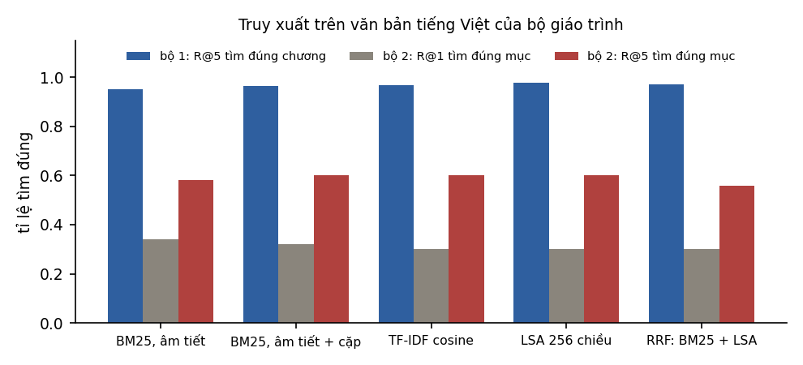
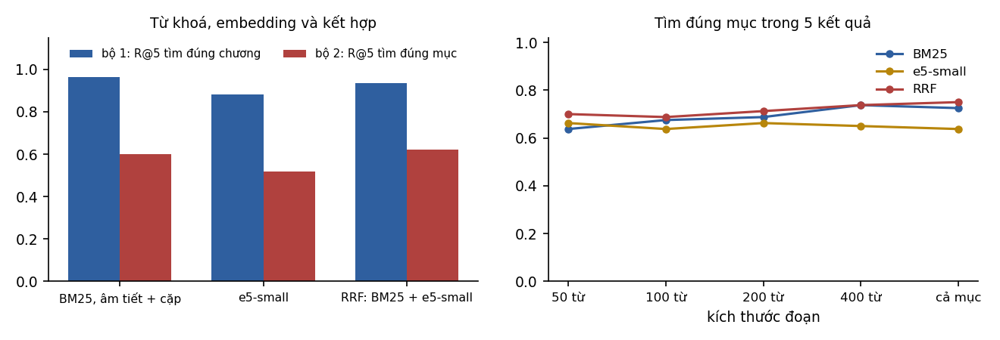

6Embedding và tìm kiếm ngữ nghĩa#
Chương 5 kết thúc ở nhận xét rằng tài liệu truy xuất là nguồn ngữ cảnh lớn nhất. Vậy tìm tài liệu bằng cách nào? Cách lâu đời nhất là tìm theo từ khoá: tài liệu nào chứa nhiều từ của câu hỏi thì xếp trước. Cách này hỏng khi người hỏi dùng từ khác với người viết. Câu hỏi "Vì sao mô hình của tôi khớp rất tốt dữ liệu huấn luyện nhưng dự đoán dữ liệu mới lại tệ?" không chứa chữ "overfitting" nào, dù đó đúng là chủ đề cần tìm.
Embedding được dùng để vá chỗ hỏng đó: biểu diễn nghĩa của văn bản bằng một vector, để hai câu cùng nghĩa nằm gần nhau dù không chung từ nào. Ý tưởng nghe rất hợp lý, nhưng như thí nghiệm ở Mục 6.5 sẽ cho thấy, trên văn bản tiếng Việt chuyên ngành, một mô hình embedding nhỏ chưa chắc thắng được tìm kiếm theo từ khoá. Trước khi tới thí nghiệm đó, ta xem embedding được định nghĩa và huấn luyện như thế nào.
6.1Embedding văn bản#
Định nghĩa 6.1 (Embedding văn bản)
Một mô hình embedding là hàm biến một đoạn văn bản thành một vector , được huấn luyện sao cho hai đoạn văn bản có nghĩa gần nhau thì có vector gần nhau theo một độ đo tương đồng, thường là cosine.
Giáo trình Biểu diễn & Căn chỉnh đã trình bày embedding của từ (Chương 2) và embedding theo ngữ cảnh (Mục 4.2). Với ứng dụng tìm kiếm, đơn vị cần biểu diễn là cả câu hoặc cả đoạn văn. Mô hình embedding câu hiện nay thường là một Transformer mã hoá (encoder): nó lấy trung bình các vector đầu ra của mọi token (mean pooling) hoặc lấy vector của một token đặc biệt, rồi chuẩn hoá về độ dài 1.
Để vector phản ánh được nghĩa, mô hình được huấn luyện tương phản (contrastive training) trên các cặp văn bản liên quan , như một câu hỏi và đoạn văn trả lời nó, hay tiêu đề và nội dung một bài báo. Với một lô gồm cặp, mỗi phải gần hơn mọi khác trong lô. Hàm mất mát thường dùng là InfoNCE:
với là tham số nhiệt độ. Nhìn kỹ, đây chính là cross-entropy của một bài toán phân loại lớp, trong đó "lớp đúng" của là , còn các đoạn khác trong lô đóng vai trò mẫu âm có sẵn, không tốn công tìm. Chất lượng của mô hình phụ thuộc nhiều vào dữ liệu cặp: các mô hình như E5 (Wang và cộng sự, 2022) được tiền huấn luyện tương phản trên hàng trăm triệu cặp văn bản thu từ web, rồi tinh chỉnh trên các bộ dữ liệu có nhãn.
Mô hình embedding mã hoá truy vấn và tài liệu riêng rẽ, nên được gọi là bi-encoder. Nhờ vậy vector của tài liệu chỉ cần tính một lần rồi lưu lại; mỗi truy vấn chỉ phải mã hoá chính nó rồi so với các vector có sẵn. Ngược lại, mô hình cross-encoder nhận cả truy vấn và tài liệu cùng lúc, cho phép attention qua lại giữa hai bên, nên đánh giá mức liên quan chính xác hơn nhưng phải chạy lại cho từng cặp. Vì vậy cross-encoder không dùng để tìm trong toàn bộ kho, mà dùng để xếp lại vài chục kết quả đầu (Mục 8.4).
6.2Chọn mô hình embedding#
Mô hình embedding cũng chia thành hai nhóm như mô hình ngôn ngữ ở Chương 3. Nhóm gọi qua API gồm mô hình embedding của OpenAI, Google (Gemini), Cohere, Jina và các nhà cung cấp khác. Dùng nhóm này thì không phải vận hành, nhưng mọi tài liệu phải gửi qua API, và đổi mô hình buộc phải tính lại toàn bộ embedding. Nhóm mô hình mở gồm các mô hình dùng với thư viện Sentence Transformers hoặc Transformers trên Hugging Face, như họ E5, BGE, GTE, trong đó có các phiên bản đa ngôn ngữ dùng được cho tiếng Việt. Bảng dưới tóm tắt các thông số cần xem khi chọn.
| Thông số | Ảnh hưởng |
|---|---|
| Số chiều | bộ nhớ và chi phí tìm kiếm tỉ lệ với ; một số mô hình cho phép cắt bớt chiều (Matryoshka embedding; Kusupati và cộng sự, 2022) |
| Độ dài tối đa (token) | văn bản dài hơn bị cắt bỏ phần cuối khi mã hoá; ảnh hưởng trực tiếp tới cách chia đoạn (Mục 8.3) |
| Ngôn ngữ | mô hình chỉ huấn luyện trên tiếng Anh cho kết quả kém với tiếng Việt |
| Tiền tố và định dạng đầu vào | nhiều mô hình yêu cầu tiền tố khác nhau cho truy vấn và tài liệu, ví dụ E5 dùng "query: " và "passage: "; quên tiền tố làm giảm chất lượng |
| Giấy phép và kích thước | quyết định có tự chạy được không, chạy trên phần cứng nào |
Bảng xếp hạng MTEB (Massive Text Embedding Benchmark; Muennighoff và cộng sự, 2023) so sánh mô hình embedding trên nhiều nhiệm vụ và ngôn ngữ. Cũng như với LLM (Mục 3.6), bảng xếp hạng giúp chọn ứng viên, còn quyết định cuối cùng nên dựa trên đo đạc với dữ liệu và truy vấn thật của ứng dụng, như thí nghiệm ở Mục 6.5.
6.3Độ tương đồng#
Có ba độ đo phổ biến giữa hai vector và : tích vô hướng , cosine và khoảng cách Euclid . Khi mọi vector đã được chuẩn hoá về độ dài 1, ba độ đo cho cùng một thứ hạng, vì
Vì vậy phần lớn hệ thống chuẩn hoá vector ngay khi tính embedding rồi dùng tích vô hướng, phép tính rẻ nhất. Nếu mô hình không chuẩn hoá sẵn mà hệ thống lại dùng tích vô hướng, các đoạn văn có vector dài sẽ được ưu tiên một cách không chủ đích.
Giá trị cosine tuyệt đối thì khó diễn giải. Embedding thường không phân bố đều theo mọi hướng mà tập trung trong một hình nón hẹp, nên cosine giữa hai văn bản không liên quan vẫn có thể khá cao (Mục 3.2 của Biểu diễn & Căn chỉnh đo hiện tượng này). Vì vậy không nên đặt một ngưỡng cosine cố định như 0,8 để quyết định "liên quan" mà không hiệu chỉnh trên dữ liệu thật; thứ hạng giữa các kết quả đáng tin hơn giá trị tuyệt đối.
6.4Ứng dụng của embedding#
Tìm kiếm ngữ nghĩa, tức bước truy xuất của RAG (Chương 8), là ứng dụng chính của embedding trong giáo trình này, nhưng không phải ứng dụng duy nhất. Vì embedding biến văn bản thành vector, các thuật toán làm việc với vector ở giáo trình Nền tảng đều dùng được cho văn bản. Có thể dùng embedding làm đặc trưng cho một bộ phân loại đơn giản như hồi quy logistic (Chương 6 của Nền tảng) hoặc k-NN (Mục 7.2 của Nền tảng); với vài trăm ví dụ có nhãn, cách này thường rẻ và ổn định hơn gọi LLM cho mỗi văn bản. Có thể phân cụm để gom các văn bản giống nhau, chẳng hạn nhóm phản hồi của khách hàng theo chủ đề (Chương 15 của Nền tảng). Có thể gợi ý bài viết hay sản phẩm có mô tả gần với những gì người dùng đã quan tâm, cách đặc biệt hữu ích cho sản phẩm mới chưa có tương tác (Mục 16.5 của Nền tảng). Và có thể phát hiện bất thường và trùng lặp: văn bản có embedding xa mọi cụm là bất thường, còn hai văn bản có embedding gần như trùng nhau là bản trùng lặp.
6.5Thí nghiệm truy xuất trên văn bản tiếng Việt#
Để so sánh các phương pháp truy xuất trên dữ liệu thật, thí nghiệm dùng chính các giáo trình tiếng Việt của lộ trình làm kho văn bản: 332 mục (các phần ###) từ năm giáo trình, tổng cộng khoảng 87 nghìn từ, được "chụp" một lần vào tệp code/ungdung/kho_van_ban.json để kết quả không đổi khi nội dung giáo trình được sửa về sau.
Có hai bộ truy vấn với độ khó rất khác nhau. Bộ 1 gồm 254 câu hỏi trắc nghiệm của các giáo trình, với nhãn đúng là chương chứa câu hỏi. Vì câu trắc nghiệm được viết dựa trên nội dung bài, chúng dùng lại nhiều từ của văn bản. Bộ 2 gồm 50 câu hỏi được viết lại theo cách một người học thật sự hỏi, cố ý tránh dùng lại từ ngữ trong tiêu đề mục. Câu hỏi về overfitting ở đầu chương là một câu trong bộ này, với nhãn đúng là Mục 9.1 của Nền tảng. Toàn bộ bộ 2 nằm trong tệp code/ungdung/cau_hoi_dien_dat_lai.json.
Phương pháp đầu tiên được so sánh là BM25, phương pháp tìm kiếm theo từ khoá chuẩn trong các máy tìm kiếm. Điểm của tài liệu với truy vấn là
trong đó là số lần từ xuất hiện trong , là độ dài tài liệu, là độ dài trung bình, và . Thành phần làm các từ hiếm có trọng số cao, còn phân số phía sau bão hoà theo : một từ xuất hiện 20 lần không được tính gấp 20 lần một từ xuất hiện 1 lần. Vì tiếng Việt viết cách giữa các âm tiết, "từ" ở đây là âm tiết, và thí nghiệm thêm cả các cặp âm tiết liền nhau để bắt được từ ghép như "học_máy".
Hai phương pháp cổ điển khác là TF-IDF với cosine, và LSA, tức phân tích SVD cắt ngắn của ma trận TF-IDF còn 256 chiều (Mục 2.6 của Nền tảng), một dạng embedding không dùng mạng nơ-ron. Đại diện cho embedding nơ-ron là multilingual-e5-small, mô hình đa ngôn ngữ 118 triệu tham số với độ dài tối đa 512 token. Phương pháp cuối cùng kết hợp hai bảng xếp hạng bằng reciprocal rank fusion (RRF; Cormack và cộng sự, 2009): mỗi tài liệu nhận điểm trên các bảng xếp hạng . RRF chỉ dùng thứ hạng, nên không cần đưa điểm của hai phương pháp về cùng thang đo.

| Phương pháp | Bộ 1: R@1 | Bộ 1: R@5 | Bộ 1: MRR | Bộ 2: R@1 | Bộ 2: R@5 | Bộ 2: MRR |
|---|---|---|---|---|---|---|
| BM25, âm tiết | 0,870 | 0,953 | 0,912 | 0,340 | 0,580 | 0,452 |
| BM25, âm tiết + cặp âm tiết | 0,886 | 0,965 | 0,924 | 0,320 | 0,600 | 0,461 |
| TF-IDF cosine | 0,874 | 0,969 | 0,920 | 0,300 | 0,600 | 0,436 |
| LSA 256 chiều | 0,866 | 0,976 | 0,918 | 0,300 | 0,600 | 0,442 |
| multilingual-e5-small | 0,736 | 0,882 | 0,804 | 0,260 | 0,520 | 0,383 |
| RRF: BM25 + e5-small | 0,811 | 0,937 | 0,867 | 0,340 | 0,620 | 0,475 |
Trong bảng, R@ (recall at ) là tỉ lệ truy vấn có kết quả đúng nằm trong kết quả đầu, còn MRR (mean reciprocal rank) là trung bình của nghịch đảo vị trí của kết quả đúng đầu tiên; Mục 6.6 định nghĩa kỹ hai đại lượng này.

Điều đầu tiên đọc được từ bảng là bộ truy vấn quyết định toàn bộ bức tranh. Trên bộ 1, mọi phương pháp từ khoá đều tìm đúng chương trong 5 kết quả ở hơn 95% trường hợp, vì câu hỏi dùng lại từ ngữ của bài. Trên bộ 2, cùng các phương pháp đó chỉ tìm đúng mục trong 5 kết quả ở khoảng 60% trường hợp. Đánh giá truy xuất bằng câu hỏi sinh ra từ chính tài liệu, như cách nhiều bộ dữ liệu tổng hợp được tạo, vì thế cho kết quả lạc quan hơn nhiều so với câu hỏi của người dùng thật.
Kết quả thứ hai đi ngược kỳ vọng ở đầu chương: mô hình embedding nhỏ không thắng BM25 trên kho này. multilingual-e5-small kém BM25 trên cả hai bộ, kể cả bộ 2 vốn được viết để tránh từ khoá. Có ít nhất ba nguyên nhân. Mô hình nhỏ. Văn bản thuộc một lĩnh vực chuyên môn hẹp, nhiều thuật ngữ và công thức. Và 30,7% số mục dài hơn 512 token nên bị cắt mất phần cuối khi mã hoá (độ dài trung vị là 358 token). Kết quả này nhất quán với bộ đánh giá BEIR (Thakur và cộng sự, 2021): khi áp dụng sang lĩnh vực khác với dữ liệu huấn luyện, nhiều mô hình truy xuất nơ-ron không vượt được BM25.
Điều thứ ba là kết hợp giúp ở truy vấn khó. Trên bộ 2, RRF giữa BM25 và e5-small cho R@1 và R@5 cao nhất (0,34 và 0,62), vì hai phương pháp sai ở những truy vấn khác nhau: BM25 hỏng khi truy vấn không có từ chung với tài liệu, còn embedding hỏng khi thuật ngữ chuyên môn quyết định. Trên bộ 1 thì ngược lại, kết hợp với một phương pháp kém hơn kéo kết quả xuống so với BM25 đơn lẻ.
Vì vậy không nên mặc định rằng tìm kiếm bằng embedding tốt hơn tìm kiếm theo từ khoá, hay ngược lại. Một mô hình embedding lớn hơn, được huấn luyện cho nhiều ngôn ngữ và có độ dài tối đa lớn hơn, có thể cho kết quả khác hẳn thí nghiệm này. Điều không đổi là phương pháp làm: dựng một bộ truy vấn đại diện cho người dùng thật có nhãn đúng, đo vài phương pháp, rồi chọn theo số liệu. Trong nhiều hệ thống thực tế, tìm kiếm kết hợp (hybrid search) giữa từ khoá và embedding là lựa chọn mặc định an toàn, vì nó ít khi tệ hơn nhiều so với phương pháp tốt nhất và thường tốt hơn ở các truy vấn khó.
6.6Đánh giá truy xuất#
Đánh giá truy xuất cần một tập truy vấn, và với mỗi truy vấn là tập tài liệu liên quan. Thước đo đầu tiên là recall@k: tỉ lệ tài liệu liên quan nằm trong kết quả đầu, hay khi mỗi truy vấn chỉ có một đáp án, tỉ lệ truy vấn có đáp án nằm trong kết quả đầu. Với RAG, đây là thước đo quan trọng nhất, vì tài liệu đúng không được truy xuất thì mô hình không có cách nào dùng nó. Thước đo thứ hai là MRR (mean reciprocal rank), trung bình của của kết quả đúng đầu tiên: MRR bằng 1 khi kết quả đúng luôn đứng đầu, và bằng 0,5 khi nó thường đứng thứ hai. Thước đo thứ ba, nDCG@k (normalized discounted cumulative gain), cho phép nhiều mức liên quan, như rất liên quan và hơi liên quan, và phạt kết quả tốt đứng thấp theo hệ số ; nó được chuẩn hoá về khoảng bằng cách chia cho giá trị của thứ tự lý tưởng.
Tập truy vấn tốt nhất lấy từ truy vấn thật của người dùng, gán nhãn bởi người hiểu lĩnh vực. Khi chưa có người dùng, có thể dùng LLM sinh câu hỏi từ tài liệu, nhưng như thí nghiệm ở Mục 6.5 cho thấy, câu hỏi sinh từ tài liệu thường chứa nhiều từ của tài liệu và làm kết quả lạc quan. Nên yêu cầu mô hình diễn đạt lại câu hỏi theo cách của người không biết thuật ngữ, và kiểm tra lại bằng tay một phần. Cũng cần nhớ rằng vài chục truy vấn chưa đủ để phân biệt các phương pháp có kết quả gần nhau: với 50 truy vấn, sai số chuẩn của một tỉ lệ khoảng 0,6 là , nên chênh lệch 0,02 giữa BM25 và RRF trên bộ 2 nằm trong phạm vi nhiễu (Mục 12.4 trình bày cách tính).
6.7Tóm tắt#
Embedding biểu diễn nghĩa của một đoạn văn bằng một vector, học được nhờ huấn luyện tương phản trên các cặp văn bản liên quan. Mô hình bi-encoder cho phép tính trước vector của tài liệu, còn cross-encoder chính xác hơn nhưng chỉ dùng được để xếp lại. Khi vector đã chuẩn hoá, tích vô hướng, cosine và khoảng cách Euclid cho cùng thứ hạng, nhưng giá trị cosine tuyệt đối khó diễn giải. Thí nghiệm trên văn bản tiếng Việt của lộ trình cho thấy BM25 tốt hơn multilingual-e5-small trên cả hai bộ truy vấn, kết hợp hai phương pháp bằng RRF tốt nhất ở bộ câu hỏi diễn đạt lại, và câu hỏi sinh từ tài liệu cho kết quả lạc quan hơn nhiều so với câu hỏi thật. Với 50 truy vấn, chênh lệch vài điểm phần trăm giữa các phương pháp vẫn nằm trong phạm vi nhiễu.
Thí nghiệm ở chương này so mỗi truy vấn với cả 332 mục, việc rất nhanh với một kho nhỏ. Khi kho có hàng triệu đoạn văn, so với từng đoạn trở nên quá chậm, và cần những cấu trúc dữ liệu cho phép tìm gần đúng mà nhanh hơn nhiều. Chương 7 bàn về các cấu trúc đó.
Tự kiểm tra
4 câu. Chọn đáp án để xem ngay lời giải thích.
1Trên kho văn bản tiếng Việt của Mục 6.5, multilingual-e5-small so với BM25 thế nào?
Vì sao: R@5 tìm đúng mục ở bộ 2: BM25 0,60, e5-small 0,52, RRF 0,62. Nguyên nhân gồm mô hình nhỏ, văn bản chuyên ngành, và 30,7% số mục bị cắt vì dài hơn 512 token.2Vì sao bộ câu hỏi trắc nghiệm (bộ 1) cho kết quả truy xuất cao hơn nhiều so với bộ câu hỏi diễn đạt lại (bộ 2)?
3Khi mọi vector đã được chuẩn hoá về độ dài 1, cosine, tích vô hướng và khoảng cách Euclid quan hệ thế nào?
Vì sao: Vì vậy phần lớn hệ thống chuẩn hoá vector rồi dùng tích vô hướng, phép tính rẻ nhất (Mục 6.3).4Vì sao RRF không cần đưa điểm của hai phương pháp về cùng thang đo?
Vì sao: Điểm BM25 không bị chặn trên, cosine nằm trong khoảng hẹp; cộng trực tiếp đòi hỏi chuẩn hoá và chọn trọng số (Mục 6.5).
Đã trả lời 0/4